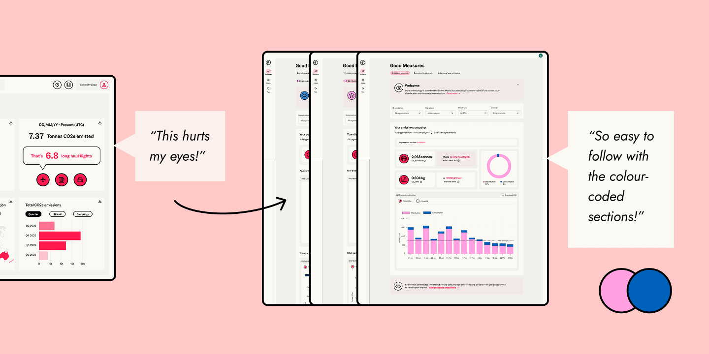
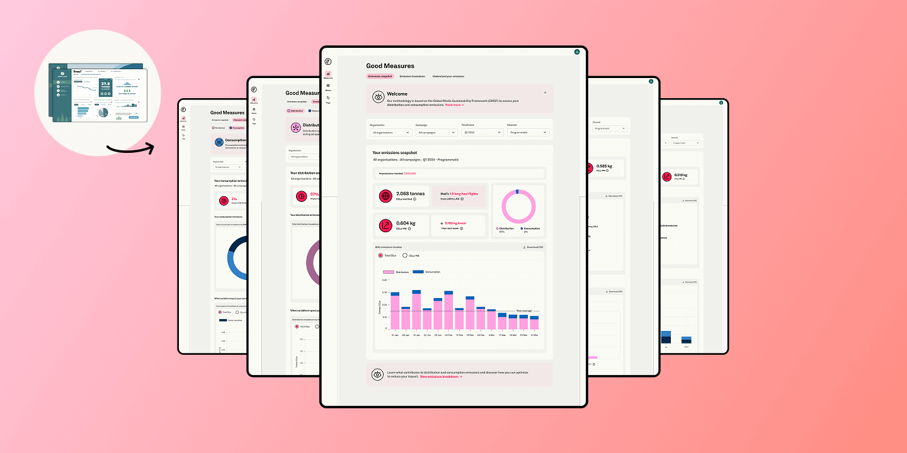

BITESIZE SUMMARY
A redesigned carbon monitoring dashboard for advertisers, built from the ground up to align with Good-Loop's high-impact company rebrand and a new, industry-wide emissions methodology.
My challenge: translating complex data and bold branding into a focused dashboard
PROCESS HIGHLIGHTS

User interviews revealed a shared need: the design had to be educational yet easy to grasp. Iteration and testing honed a visual language that used brand colours to guide users through complex data.
To support accessibility, I included text and icons to ensure that understanding of data was not reliant on colour alone
OUTCOME

The redesigned dashboard brings brand and data together, delivering clarity for two distinct types of users: Agency Decision-makers needing a big-picture view, and Campaign Analysts diving into the details.
Easy to use, with clearly presented data and a design that feels modern
— CARLA, CAMPAIGN ANALYST
READ THE FULL CASE STUDY (PDF) →